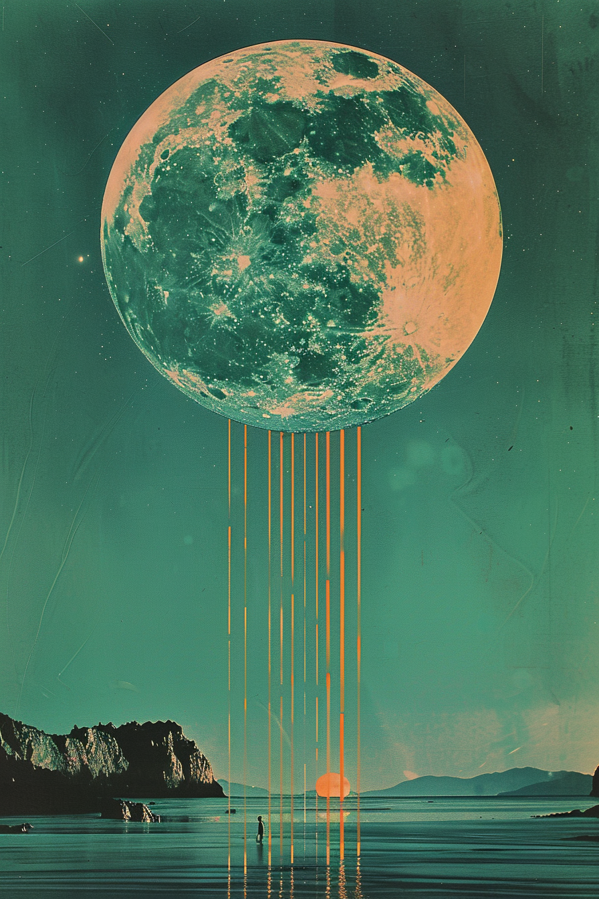
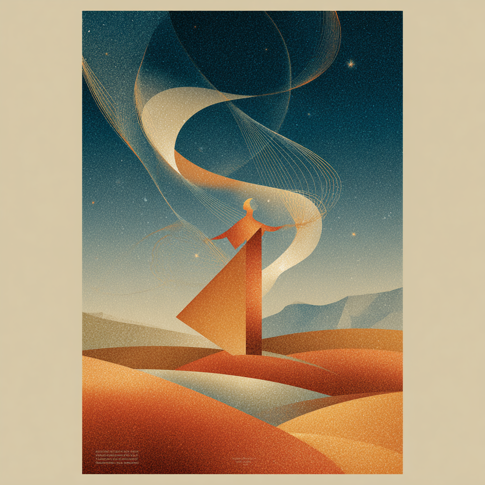

A narrative OS
for the resistance.
Story Loom is narrative infrastructure for people who are done building on extractive terms. Organize your lived stories, shadow work, and deepest convictions into work that regenerates — and find the community of aligned builders doing the same.
What it is
Not another content tool.
A narrative field.
Most platforms are designed to extract — your attention, your content, your labor — in service of an algorithm. Story Loom is built on the opposite premise: that your lived experience is the raw material, your convictions are the infrastructure, and your community is the point.
It's an operating system for the whole arc of narrative work: excavating what you've lived, shaping it into language, building systems around it, and putting it into relationship with other people building from the same orientation.
Begin the work →What's inside Story Loom
- Story Journal — a private space for lived experience & ideological fuel
- Story Bank — your narrative field, not your content calendar
- Conviction-to-Transformation messaging you own and can build on
- Anti-extractive positioning & offer design
- Community of aligned builders doing resistance-minded work
The WEAVE Method
Five phases. One continuous arc. Built on Jungian Active Imagination, depth psychology, and 25 years of narrative strategy work.
Wander
Before we build anything, we get lost on purpose. Wander is the exploratory phase — taking stock of everything you carry: your origin stories, your wounds, your values, your work, your contradictions. No editing. No shaping. Just honest inventory.
Excavate
This is the Jungian core of Story Loom. Excavate goes beneath the surface narrative — past the versions of your story you've rehearsed, to the material that hasn't been spoken yet. We use Active Imagination — Jung's method for dialoguing directly with unconscious content — to surface what the polished version has been leaving out.
Architect
Now we build. Architect is where the raw material becomes structure — a narrative system with a clear point of view, a defined who-it's-for, a set of convictions that organize everything, and language that sounds like you at your most clear and courageous.
Voice
Voice is where you learn to speak the new story — not perform it. This phase develops your distinct brand voice and trains it across the contexts where you actually show up: writing, speaking, pitching, publishing, in community. Your voice is not a tone of voice guide. It's a practice.
Embody
The story doesn't live in a document — it lives in you. Embody is the integration phase: building systems that make the story automatic, aligning your offers and operations with it, and entering into relationship with a community building from the same orientation. The work compounds. The story becomes the life.

"Until you make the unconscious conscious,— Carl Jung
it will direct your life and you will call it fate."
Most brand strategy asks you to perform clarity you don't yet have. Active Imagination — Jung's method for entering into dialogue with the unconscious — inverts this. Instead of starting with what you want to say, you start with what's actually there: the images, voices, figures, and narratives that your conscious mind hasn't yet been able to articulate.
In Story Loom, Active Imagination practices are woven into the Excavate phase and returned to throughout. They are not meditation. They are not journaling. They are a disciplined method for retrieving narrative material that performance-based brand work will always miss.
The story doesn't wait
for your next session.
Narrative work happens when it happens — in the middle of the night, on a walk, when something finally cracks open. Story Loom is built for how excavation actually moves: with always-on access to the practices and the person guiding your work.
01
Unlimited Voxer Access
When a story surfaces — speak it to me. Send a voice note any time and I'll receive it, help you capture it, and shape it into material for your Story Loom. Your best material doesn't always arrive at a scheduled hour. Now it doesn't have to wait.
02
Custom Guided Meditations
Each narrative phase comes with custom guided meditations built specifically for the work we're doing together — designed to help you drop below the performing mind and into the material that actually lives there, waiting to be named.
03
Active Imagination Exercises
Between sessions you'll have access to guided Active Imagination exercises — Jung's own method for entering into dialogue with unconscious material, surfacing the narrative content that talking alone can't reach. Not meditation. Not journaling. Something older and stranger.

Who it's for
For the builders who know the current model isn't working.
Story Loom is for people building at the intersection of purpose and post-capitalist values — who need narrative infrastructure that matches their ethics.
Begin the work →"Thrutopias are stories of how we get through — not to some imagined utopia, but through the crisis, to something liveable, something worth having."
— Manda Scott
You're building something post-capitalist
Your work has a clear ethical orientation — and you need brand infrastructure that doesn't undermine it.
You're exhausted by performing clarity
You've tried other frameworks. They felt like wearing someone else's story. You want to excavate your own.
You have lived experience you haven't fully used
Your story is the most powerful thing you have. You just haven't yet found the infrastructure to organize it.
You want community, not an audience
You're looking for aligned builders — not followers. Relationship over reach. Resonance over virality.
The thread continues
in your inbox.
Reflections on narrative, depth psychology, and building resistance-minded work. Occasional and intentional — not a feed.
No algorithms. No automation sequences. Just letters worth reading.
The story you've been afraid to tell
is usually the one that changes everything.
Story Loom is woven into the coaching work — you don't need to wait. Start with a free discovery call and bring your narrative into a container built to hold it.